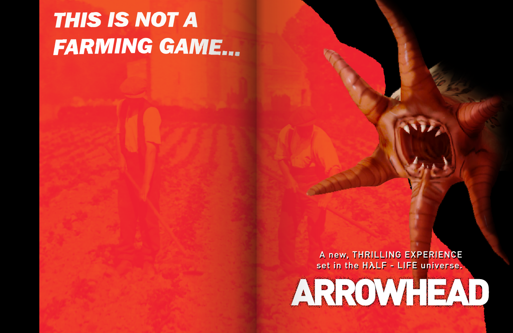

ARROWHEAD
Arrowhead is a Half-Life 2 mod set during the so-called “First Days,” where Xen flora and fauna, however briefly, ruled the Earth. Drawing from authors like Stephen King, Marc Laidlaw, a variety of pulp sci-fi writers, and just about anything else that catches my eye, my work on Arrowhead is intended to be a love letter to Half-Life, creature features, and the general aesthetic of classic science fiction and horror in all its forms.
You can learn more about it here! I’ve written over 20,000 words of Arrowhead narrative content, not including promotional or development material. Below is what I can share without spoilers! This includes pre-release narrative content and a selection of vignettes, which are long and descriptive short stories written to help level designers, artists, and audio producers. They can be accessed by clicking on the images below. I hope you enjoy them!
Logs from Dale R.
THE STORE

THE CANYON